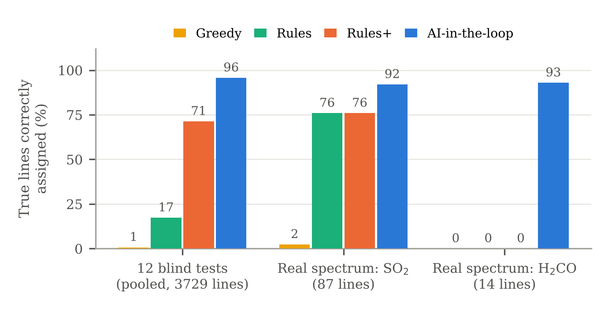

A new molecule's spectrum is fitted by guessing constants (often from quantum chemistry, about 1% off), predicting lines, matching them to peaks, refitting and repeating. The matching is done by an expert because the list is crowded with other species, vibrational satellites and isotopologues, and a few wrong assignments derail the fit. The question here: does a reasoning step in that loop make assignment work where automation alone fails, and can that be measured?
Expert CDMS line lists are stripped of labels; 15% of lines are dropped, 33–37% distractor peaks (isotopologues, a vibrational state, random) and noise are added. Each of A, B, C starts 0.5–1% off in a random direction, quartic constants 10–30% off, and all higher-order terms are removed. Blind cases also hide the molecule order, the data seed and an overall frequency scale. The true labels are read only by the scorer.
Each round: SPCAT predicts lines with uncertainties validated against Monte Carlo refits; a Bayesian matcher scores every prediction–peak pair against the local density of unrelated peaks; a decision step accepts, rejects or defers candidates and releases Hamiltonian terms; SPFIT refits. A hypothesis search (AUTOFIT-like) provides the first three lines. Four arms share this code: greedy matching, rules (accept at P ≥ 0.95), rules+ (the lessons of early AI runs written as rules), and AI-in-the-loop, where an LLM (Claude) writes a decision file each round with a reason per decision, using what-if refits, series coherence and joint-consistency checks.
| Test | Greedy | Rules | Rules+ | AI |
|---|---|---|---|---|
| 12 blind cases, pooled | 0.7 | 17.3 | 71.3 | 95.7 |
| cases ≥ 92% | 0/12 | 0/12 | 7/12 | 11/12 |
| assignments correct | 0.6 | 97.2 | 98.5 | 99.2 |
| Real SO2, 0.1% prior | 2.3 | 75.9 | 75.9 | 92.0 |
| Real H2CO, 0.1% prior | 0 | 0 | 0 | 92.9 |
| Real spectrum, 1% prior | 0 | 0 | 0 | 0 |

Where the AI arm converged (11 of 12 blind cases), every fitted constant agrees with an oracle fit (all true labels, same Hamiltonian) to ≤ 0.65σ; on the real SO2 spectrum, to ≤ 0.92σ. Scored afterwards, 665 of its 676 accepts that went beyond the rule default were correct, and 28 of 29 decisions to keep a line the rules would reject were correct: the rules mistake an incomplete Hamiltonian for a misassignment. Judgement paid off in recovering from a wrong start (rules+ stalled at 0–1.3% in two such cases) and in deciding when a missing term, not a wrong label, explains a residual. It failed once: in one blind case my own errors stalled the run at 31%, where rules+ reached 98.6%.
Most tests use catalog line lists, not raw spectra; the real spectrum is astronomical (4 MHz lines, not kHz lab accuracy) and was scored against CDMS positions. Its intensity scale and error model used four numbers calibrated on reference lines. Only two rigid molecules were tested, with one seed per blind case; the molecule identity was not hidden; the decision-maker was one LLM in an interactive session, not a standalone agent, and the decision aids changed during the runs.
Test on partly assigned JPL laboratory spectra; solve the start on dense spectra from a 1% prior (more anchors, intensity patterns, a wider search); add a molecule with internal rotation; turn the decision step into an API agent with a fixed toolset, and measure cost per round and how often a spectroscopist disagrees with it.